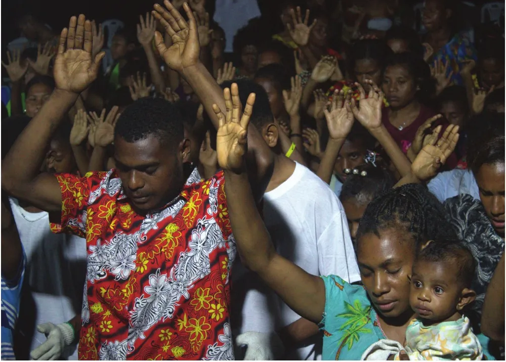
15–20 September 2025
Popondetta Youth Revival Crusade
Youth from different centres joined for empowerment sessions, community outreach, worship and baptism.
Voice of Truth Incorporated
Every person is valuable to GOD. Through crusades, prison ministry and community fellowship, we share the hope of Jesus and walk alongside people in faith and purpose.
2026 Ministry Highlights
11–13 September 2026
Peter’s Field, Kamkumung, Lae · Morobe Province
Moments of prayer, worship and community gathering during the crusade. Select a photo to view it larger.
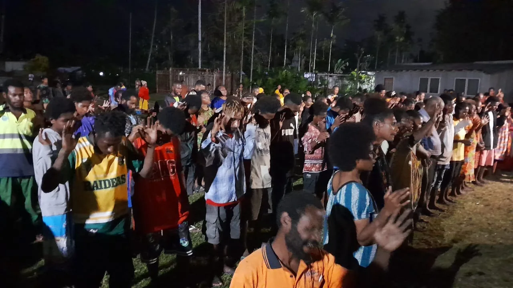
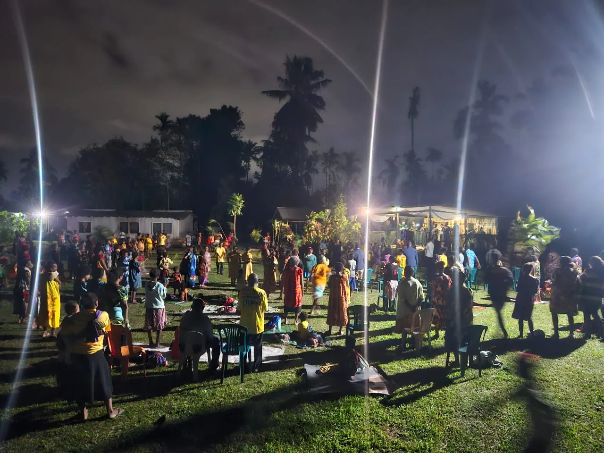
Our ministry journey
Moments of worship, outreach, learning and community connection.

15–20 September 2025
Youth from different centres joined for empowerment sessions, community outreach, worship and baptism.
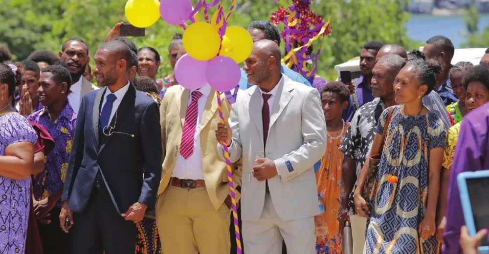
25 January 2025
The official opening of the newly constructed church marked a new chapter for the ministry and its community.
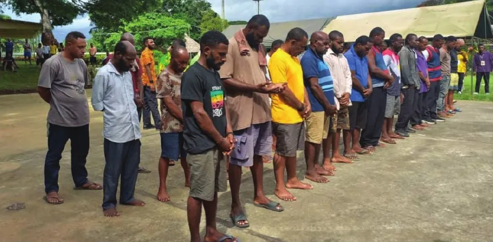
9 April 2025
TVOT Ministry hosted a dedication service at Bomana’s High Security Unit, bringing people together for prayer and declaration.
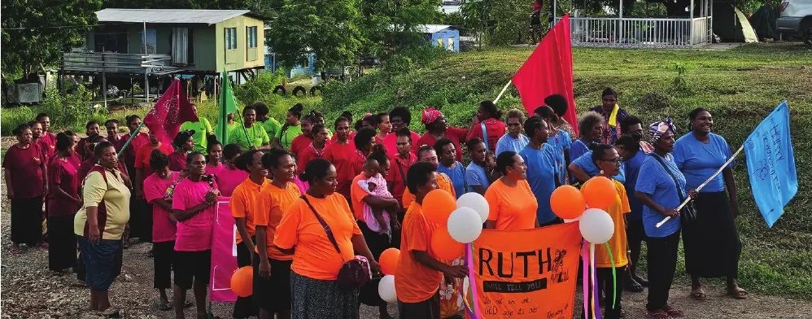
18–19 April 2025
Women gathered for prayer, reflection, testimonies and mutual encouragement.
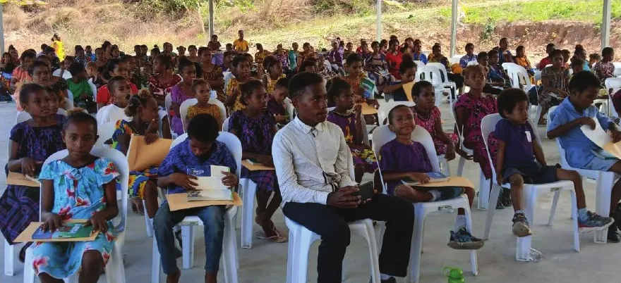
19 July 2025
Children celebrated completion of a teaching programme with their families and the ministry community.
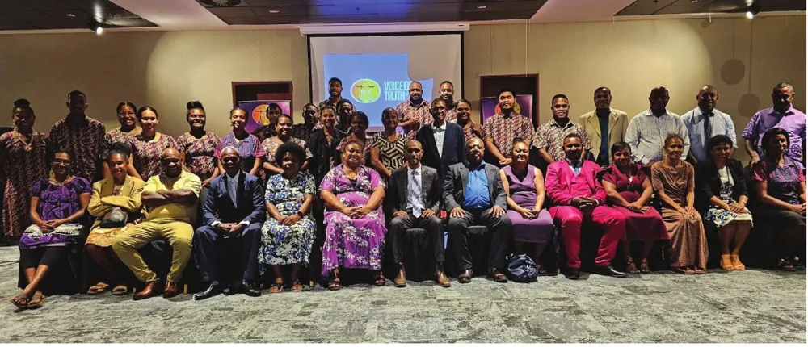
Friday, 30 May 2025 · APEC Haus
The ministry shared its vision for the Rehabilitation and Empowerment Centre with potential supporters and community partners.
Explore the Centre project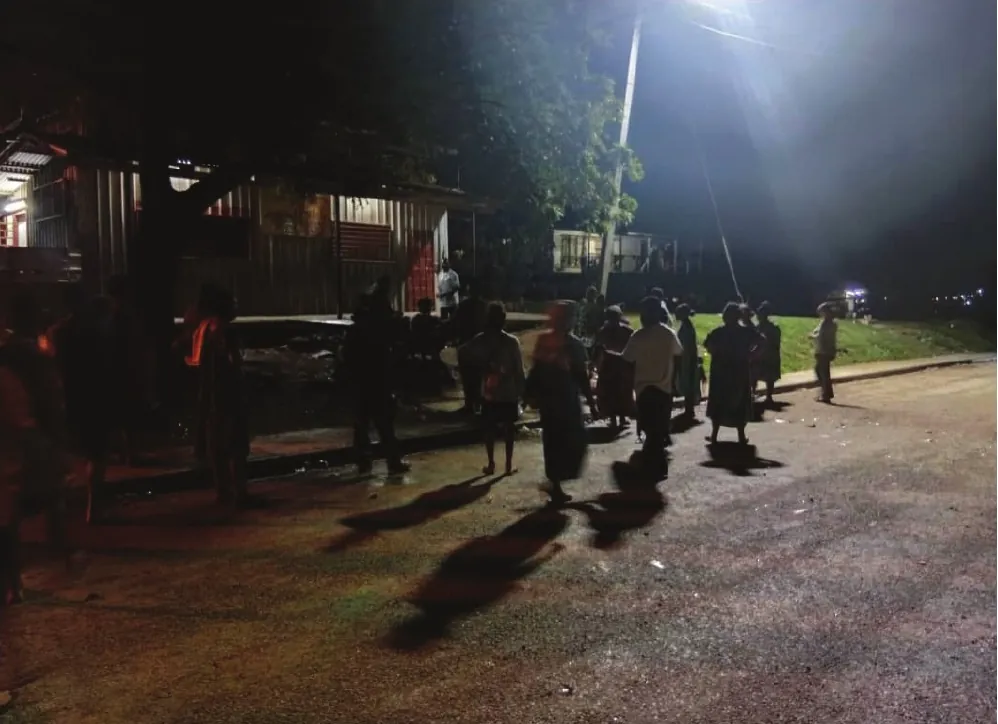
15 November 2025
Youth from Baruni, Tatana and Siriho prayed and ministered across 14 sections of the village in preparation for the Declaration events.
Our outreach journey
Guided by the leading of the Holy Spirit, we hold crusades to share the Gospel and encourage communities facing social challenges.
Our outreach journey includes five major crusades:
Our outreach continued with the Declaration Crusade in Baruni Village in November 2025, alongside the Popondetta and Lae crusades featured above.
Fellowship & practical care
At the invitation of Bomana Correctional Institution’s administration, our ministry provides ongoing spiritual support to inmates and staff through worship, biblical teaching and counselling.
Our prison outreach includes dedication services and regular Sunday ministry. Visits to the Minimum Security Unit (MSU) have also brought people together through fellowship, sport and encouragement, including a fun day in February 2026.
Connect with our outreach teamCommunity partnership
Bringing people together around unity, shared responsibility and the development of Baruni and Tatana.
Our next generation
Encouraging young people through fellowship, mentorship, leadership development and empowerment activities.
Bomana Outreach
Moments from our visits to Bomana MSU, from prayer and fellowship to sport and shared activities. Select a photo to view it larger.
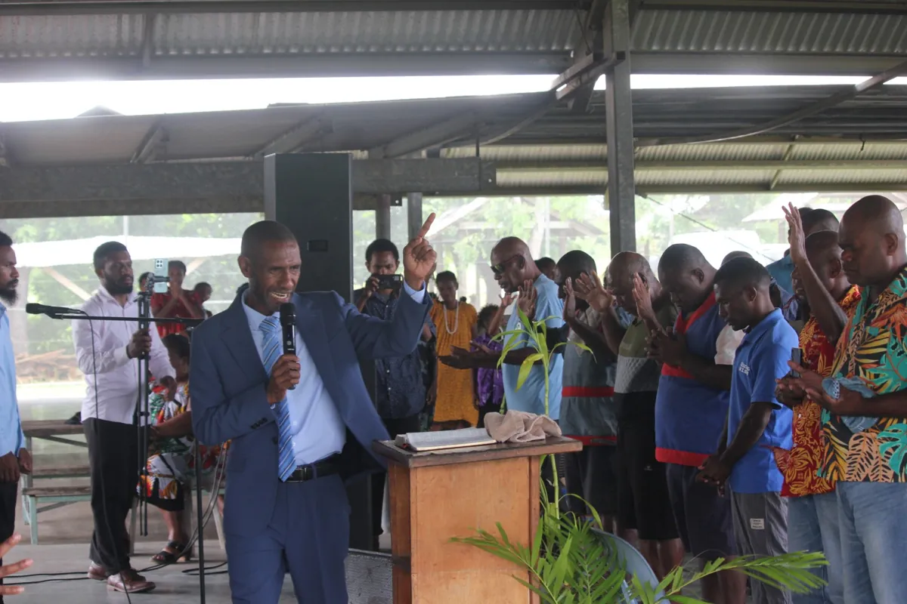
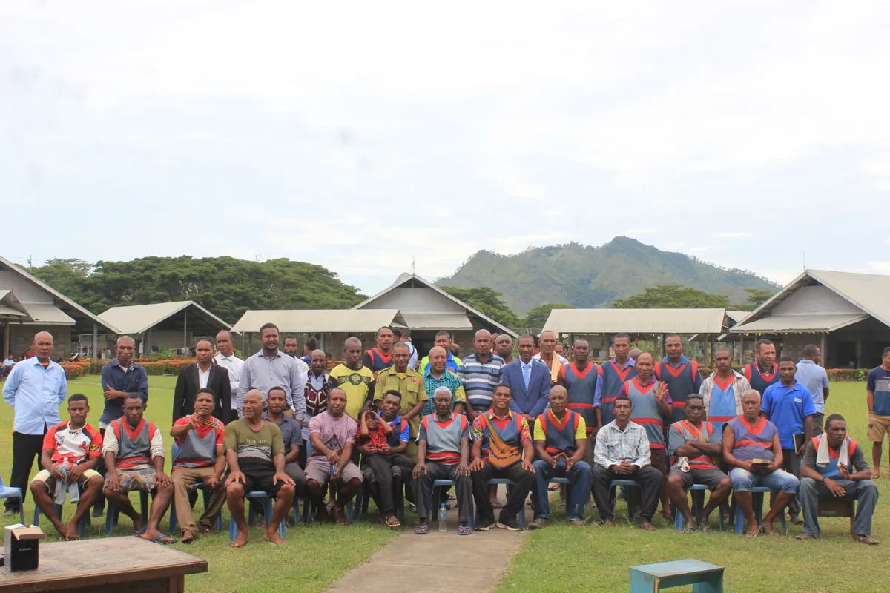

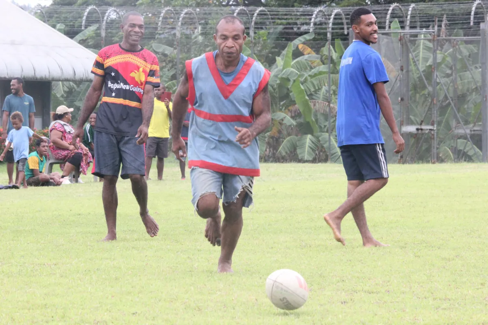
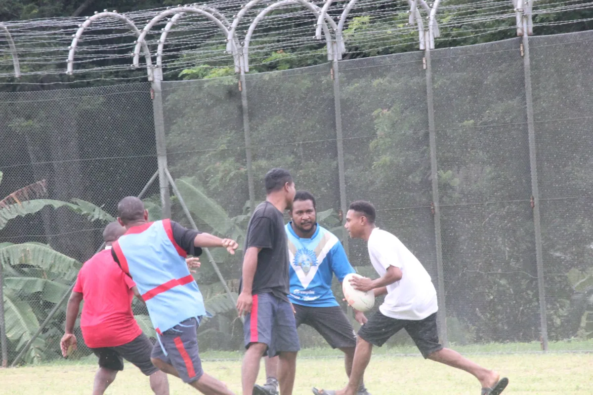
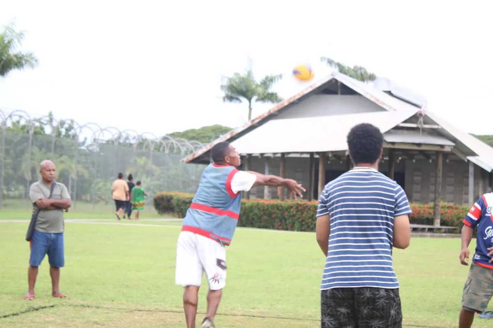
A shared vision
Christmas Day outreach initiative
A community declaration of “Baruni for Jesus”, expressing our faith through a shared witness in the village.
Contact our team for the current programme and arrangements.
Ministry life
Moments from our ministry gatherings.